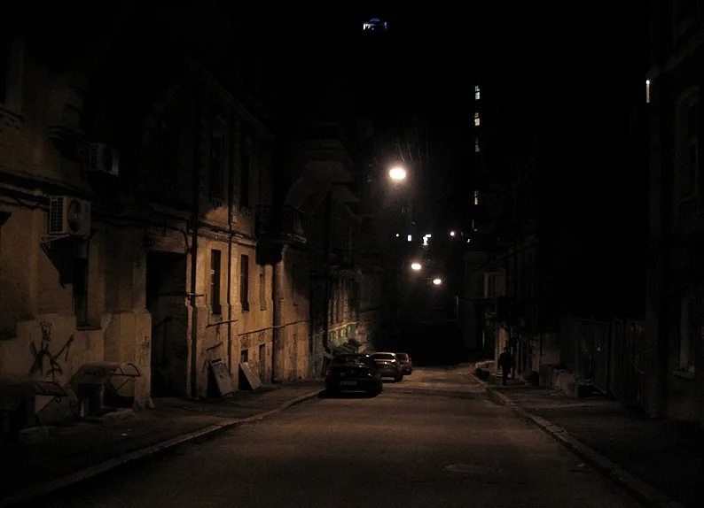

Улица с низким освещением.
18-летний Алексей оказался в криминальном районе Шелехова после вечеринки у друга.
Он решил вернуться домой пешком, но заблудился и попал в опасный квартал.
В этой ситуации ему предстоит сделать несколько выборов, которые могут привести к серъёзным последствиям.
Алексей видит двух подозрительных мужчин, стоящих у подъезда.
Он может:
Подойти к ним и спросить дорогу
Перейти на другую сторону улицы и обойти их
